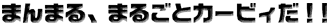
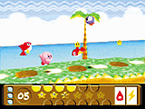
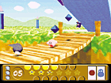
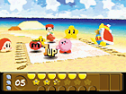
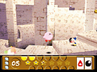

|  |
 1999 HAL Laboratory,Inc./NINTENDO 1999 HAL Laboratory,Inc./NINTENDO |
| 2000年3月発売予定 ●振動パック対応 |
|  | おなじみカービィの最新作が64で登場。カービィといえば、吸い込んだ敵の能力をコピーして攻撃するアクションが有名だけど、今回はさらにいろんなアクションをプラスしている。 たとえば、敵をよいしょっと持ち上げて、その持ち上げた敵によって特別な攻撃をすることができるんだ。さらに、吸い込んだ能力のかけ合わせ（能力ミックス）で、新しい能力を身につけることもできる。でも操作が難しいんじゃ？と思うかもしれないけれど、そんなことは全くないから、安心して遊んでみてね。 |
| 敵からコピーできるのは、敵の能力だけじゃないんだ。敵が持っている武器をうばうこともできるから、いろいろ試してみるといいかも。 |  |
|  | 今度のカービィは、謎の敵に襲われた妖精を助けて、ばらばらになったクリスタルを集めなければならない。冒険の途中で、意外なキャラクターがカービィを助けてくれるかも！？ |
| 64になって冒険のステージも立体的になり、自然な奥行きを感じる作りになっている。おもしろい仕掛けもたくさんあるから、先にすすむだけでワクワクするぞ。 |  |
| ※画面は全て開発中のものです。 | |